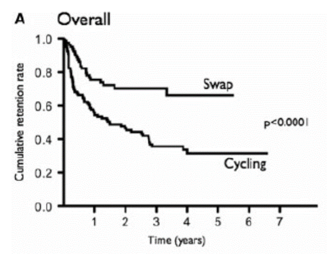
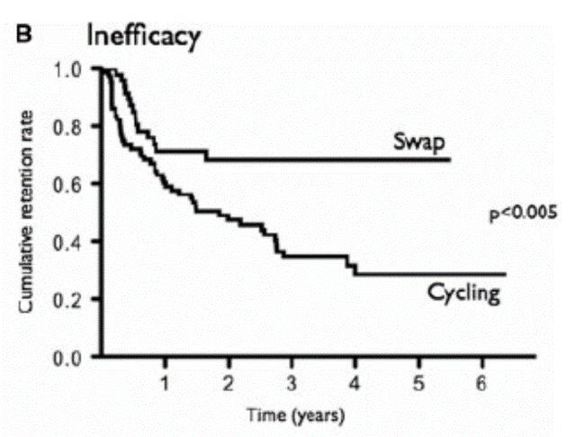
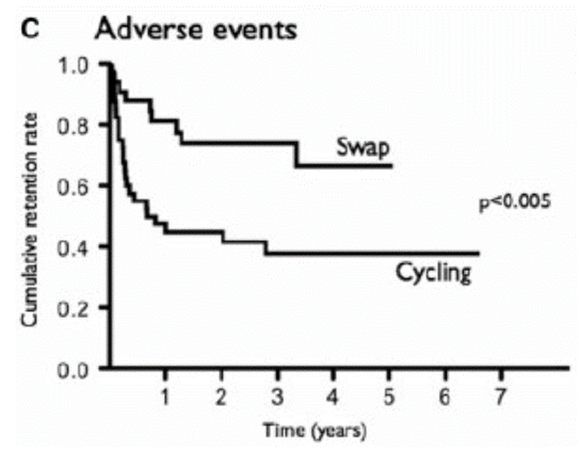

2ndBioは作用機序を変えた方が継続率が高い
201名の2nd line biologics患者についてTNF cyclingと別のMOA薬剤に切り替えた群で継続率を評価



TNF→TNFのスイッチよりも、別のMOAに変えた方が、効果不十分、有害事象による脱落が少なく、継続率が高い
201名の2nd line biologics患者についてTNF cyclingと別のMOA薬剤に切り替えた群で継続率を評価
TNF→TNFのスイッチよりも、別のMOAに変えた方が、効果不十分、有害事象による脱落が少なく、継続率が高い